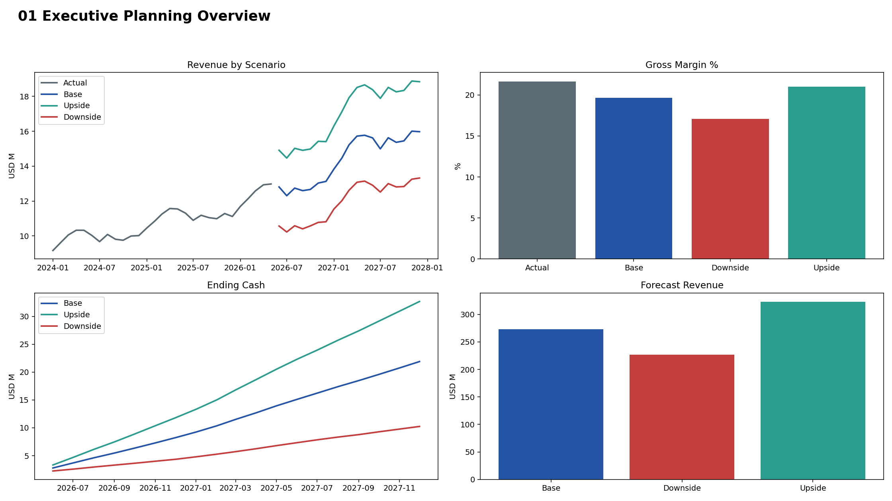
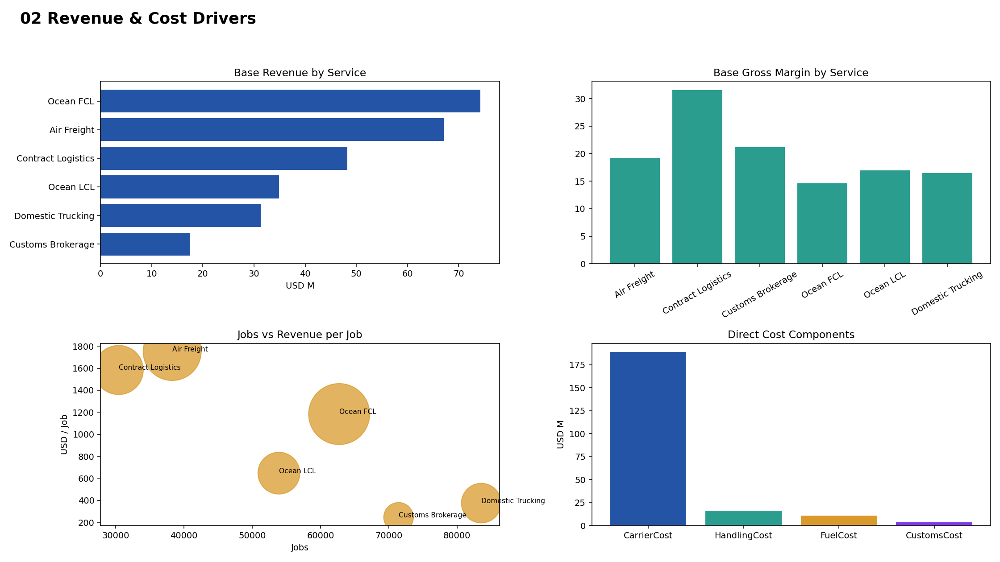
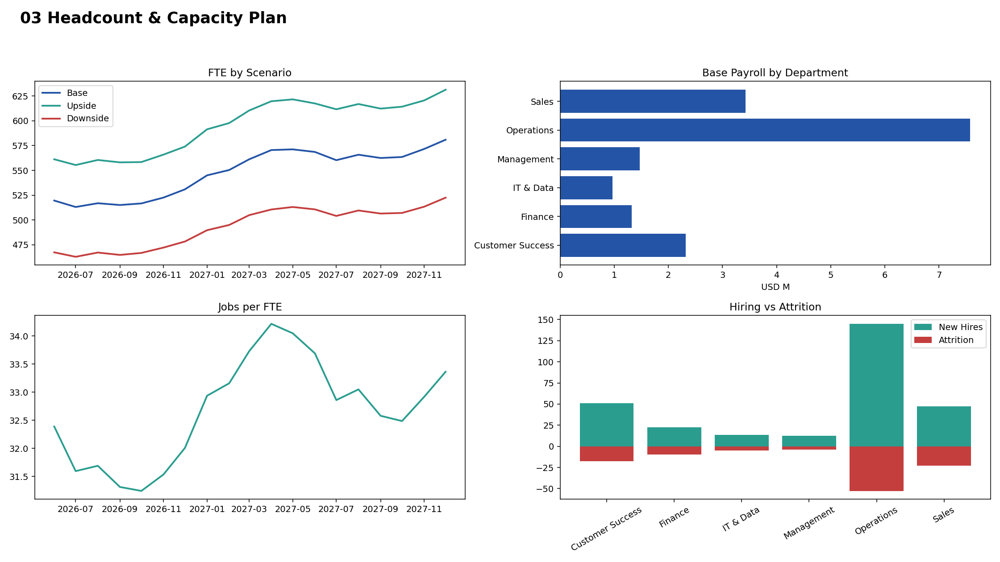
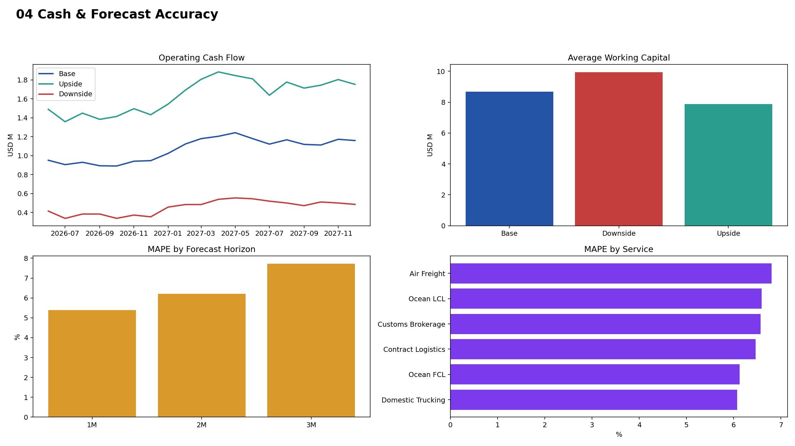

Executive Planning Overview

Revenue & Cost Drivers

Headcount & Capacity Plan

Cash & Forecast Accuracy

Static preview for Power BI build direction. This is not a PBIX substitute; use the prepared data, DAX, theme and page maps to build and QA the final Power BI file.



